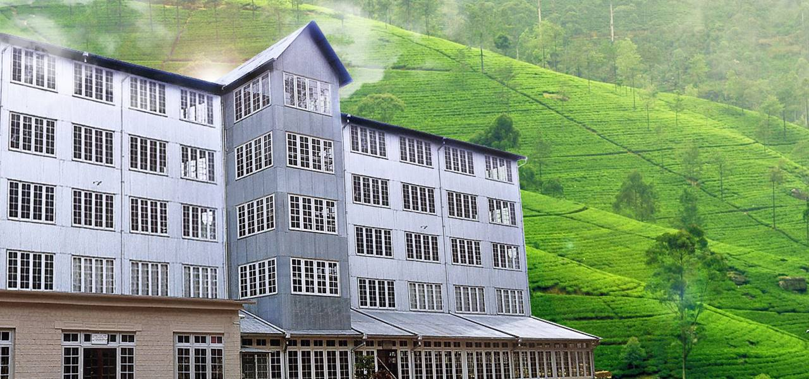

Ceylon Tea meseum
A building from the past...
A building from the past...
The Hanthana Tea Factory, which was first built in 1925, is now home to the Ceylon Tea Museum. The first successful attempts at tea cultivation were made in the Kandy area, and it was from this former capital of the Sinhalese people that Sri Lanka's dominant contemporary industry spread out to encompass the entire hill nation. Therefore, Kandy was the ideal location for a museum devoted to the history of Ceylon Tea.
The former Hanthana Tea Factory, which was built in 1925, is now home to the Ceylon Tea Museum. It is 3 kilometers south of Kandy.
The Tea Museum is housed in a four-story building with historic machinery, a library, and an auditorium from the ground to the second floors. One must go to the third floor, which is the sales unit, to purchase the mouthwatering variety and flavors of Sri Lankan tea. A spectacular restaurant is located on the fourth level, where patrons can have a complimentary cup of tea while taking in the breathtaking panorama of the hill region. A telescope placed here allows one to see the Matale Range and Kunckles Range. A view of the surrounding greenery and many sorts of tea plants may be seen from the summit.